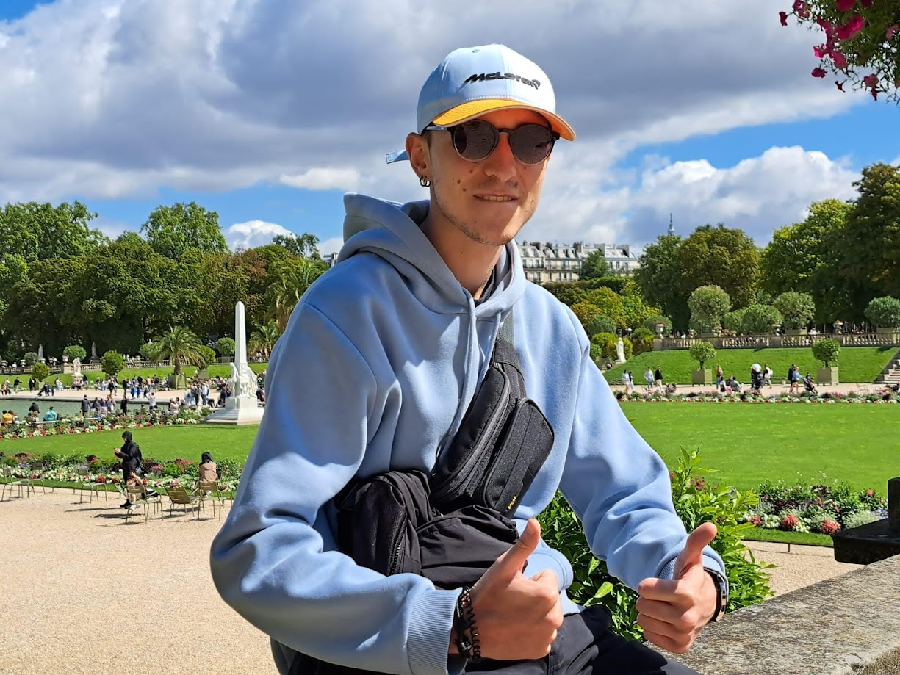
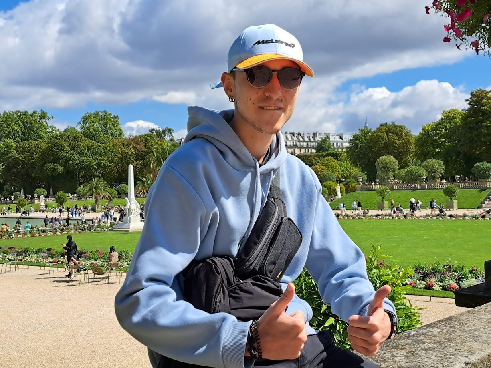

Inicio
Mi nombre es Álex Caso Díaz, alumno del Máster Universitario en Ingeniería Web. En esta página web podrás ver información personal sobre mi y una serie de proyectos personales pasados y futuros.
Mi nombre es Álex Caso Díaz, alumno del Máster Universitario en Ingeniería Web. En esta página web podrás ver información personal sobre mi y una serie de proyectos personales pasados y futuros.
